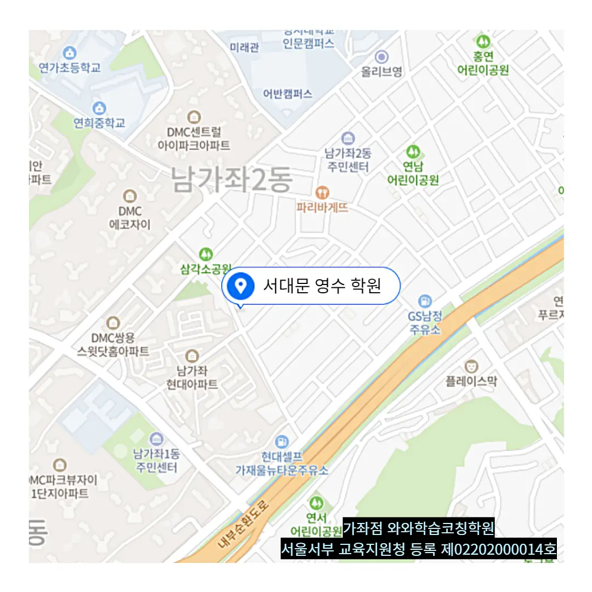

주거지역 주변에 위치한 교육기관을 살펴볼 때, 도보 이동이 편리한지 먼저 확인해요. 부모님은 교통소음이나 차단된 골목을 피하고 조용한 환경을 선호하니까요. 강사진은 전공 경력과 지도 스타일을 직접 만나볼 수 있는 체험 수업을 활용해요. 수업 내용은 교과서 연계와 실전 문제 풀이 비중을 비교해요. 비용은 월 납입액과 추가 교재비를 모두 포함해 총 부담을 계산해요. 마지막으로 후기와 수강생 만족도를 여러 채널에서 교차 확인하면 선택에 확신을 가질 수 있어요.
각 연령대마다 집중력, 학습 목표, 생활 패턴이 달라요. 초등 저학년은 놀이와 학습을 자연스럽게 연결하는 것이 효과적이에요. 초등 고학년은 스스로 문제를 찾아 해결하는 습관을 길러야 해요. 중학생은 교과서 중심의 심화 학습과 시험 대비 전략이 필요해요. 고등학생은 논술서술형 답안 작성 능력을 키우는 것이 중요해요. 전체 학년에서는 교실 내 집중도가 높아도 성적 향상이 바로 이어지지 않을 때가 많으니 꾸준한 피드백과 복습이 필수적이에요.
이 남가좌 국어학원은 개념 간 관계도를 직접 그려보는 활동을 중심으로 수업을 진행해요. 학생은 스스로 연결 고리를 찾으며 이해도를 깊게 하고, 주요 대상은 중등 수학과 국어 실력을 강화하고자 하는 중학생과 고등학생이에요. 커리큘럼은 기본 개념 정리 응용 문제 풀이 시험 전략 설계 순으로 구성돼요. 중등수학A 과정은 월 250,000원, 중등수학B 과정은 월 300,000원이라는 투명한 수강료 정책을 적용하고 있어요. 계획 수립 후 검토와 수정 시간을 충분히 확보해 학습 효율을 극대화하고, 국어 주제문 추론 연습을 10회 반복해 감점 없이 실력을 향상시켜요. 단순 나열이 아닌 실제 사례 중심 설명으로 학생이 선택해야 할 이유를 명확히 제시해요.
| 학원명 | 와와학습코칭학원 |
| 수강료 | 중등수학A 250,000원 | 중등수학B 300,000원 |
CURRICULUM
이 남가좌 국어학원의 커리큘럼은 기본 개념 습득을 위한 강의와 심화 문제 풀이를 교차로 진행해요. 수업 시간에는 교사가 직접 풀이 과정을 시연하고, 학생은 즉시 따라 해 보면서 이해도를 점검해요. 과제물은 시험 후 피드백을 반영해 난이도를 조정하고, 누적 학습 기록을 통해 개인 성장 그래프를 제공해요. 주간 복습 시간에는 핵심 문항을 재점검하고, 오답 노트를 작성해 학습 효율을 높여요. 특정 주제마다 미니 프로젝트를 도입해 실제 적용 능력을 키우는 것이 특징이에요.
남가좌 학생들이 흔히 겪는 실수 유형을 살펴보면, 남가좌 국어학원 선택 단계에서 과도한 비용만을 기준으로 판단하는 경우가 많아요. 등록 후에는 목표 설정 없이 무작정 수업에 참여해 진도 관리가 흐트러지는 경우도 나타나요. 학습 관리 단계에서는 복습 계획이 부실해 실제 성적 향상이 제한되는 문제가 보입니다. 이러한 문제들을 해결하려면 초기 상담에서 목표와 예산을 명확히 하고, 정기적인 학습 점검과 맞춤형 복습 전략을 도입하는 것이 핵심이에요
학부모와의 대화는 정보 전달이 아니라 학습 동반자로서의 역할을 강조해요. 피드백 구조를 설계해 학생이 스스로 개념의 필요성을 느끼게 하고, 학습 흐름을 단편이 아닌 이야기가 되도록 연결합니다. 목표 등급에 따라 분반 수업을 운영해, 수준에 맞는 과제를 제공하고, 학습 내용을 체계적으로 분류해 효율을 높입니다. 이런 전략은 학생이 자기 주도적으로 공부하면서도 지속적인 성장 궤도를 유지하도록 돕습니다.
중학교 이 학년 딸아이가 수업 시간에 질문은 메모해두지만 혼자서 다시 정리하고 복습하는 과정이 아직 약하다면 이곳이 정말 잘 맞을 거예요. 문제 풀이 결과만 보고 맞았는지 틀렸는지 확인한 뒤 바로 공부를 끝내버리는 학생에게도 큰 도움이 돼요. 풀이 과정을 왜 그렇게 적었는지 스스로 설명하게 하고 모르는 부분은 확실하게 짚고 넘어가게 유도하기 때문이에요. 스스로 학습을 정리하는 힘을 길러주고 싶다면 추천해 드려요.
학부모님들께서 전해주신 의견을 보면, 아이가 성취를 체감하면서 공부를 즐기기 시작했다고 말씀해 주셨어요. 또 다른 부모님은 복습 자료를 스스로 정리하는 습관이 생겼다고 강조했어요. 선생님의 구체적인 피드백 덕분에 아이가 학습 방법을 명확히 이해하게 되었다는 이야기도 들었어요. 서술형 훈련을 꾸준히 진행해 주셔서 아이가 시험 대비에 든든함을 느낀다는 평도 많았어요. 마지막으로 수업 내용에 대한 빠른 피드백이 바로 전달돼 학습 효율이 높아졌다는 평가가 지속적으로 나오고 있어요.